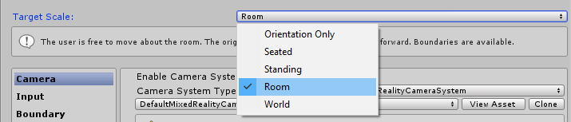
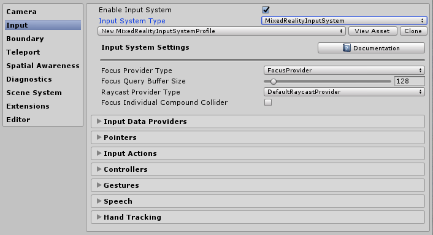
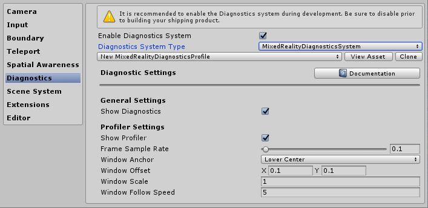
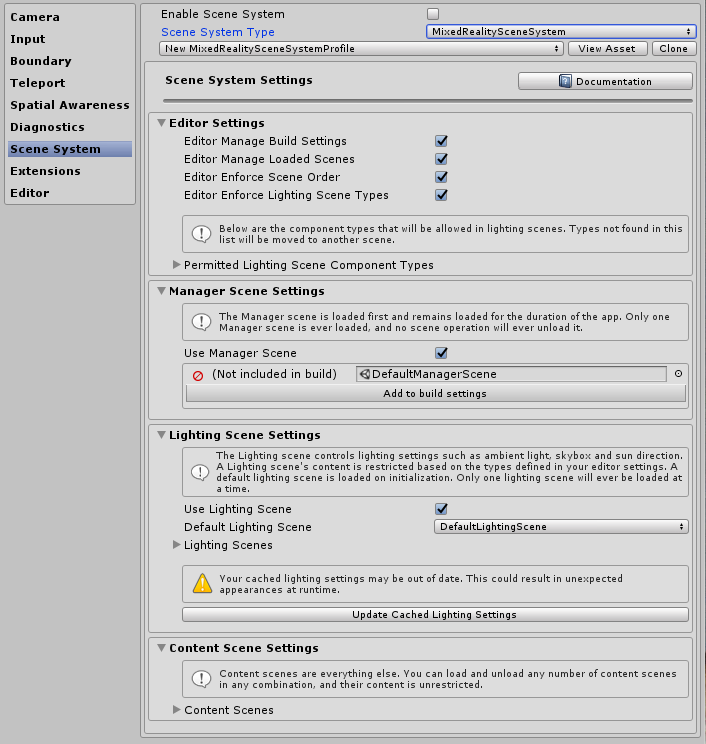

Mixed Reality Toolkit profile configuration guide
Mixed Reality Toolkit 配置文件配置指南
混合现实工具包集中了尽可能多的管理工具包所需的配置（除了真正的运行时“事项”）。
此指南是针对工具包当前可用的每个配置文件的简单演练
主要MRTK配置文件的配置
在您的场景中附加到MixedRealityToolkit GameObject 的主要配置文件提供了项目中工具包的主要入口点。
Note
混合现实工具包"锁定"默认配置屏幕，以确保项目始终有一个共同的起点，并鼓励您在项目开发时开始定义自己的设置。在播放模式期间，MRTK配置不可编辑。

混合现实工具包中的所有默认配置文件可以在Assets\MixedRealityToolkit.SDK\Profiles中的SDK project中找到。
Important
DefaultHoloLens2ConfigurationProfile 对HoloLens 2进行了优化设计。详情见配置文件.
当打开主MRTK配置文件时，您将在inspector中看到以下屏幕：
如果您在场景中选择了没有 MixedRealityToolkit 的MixedRealityToolkitConfigurationProfile资源，它会询问您是否希望MRTK自动为您设置场景。这是可选的，但是，场景中必须有一个活跃的MixedRealityToolkit对象来访问所有配置屏幕。
这包含项目的当前活动运行时配置。
从这里您可以导航到MRTK的所有配置文件，包括：
- Mixed Reality Toolkit 配置文件配置指南
- Mixed Reality Toolkit 主配置文件
- 体验设置 Experience settings
- 相机设置 Camera settings
- 输入系统设置 Input system settings
- 边界设置 Boundary visualization settings
- 传送设置 Teleportation system selection
- 空间感知设置 Spatial awareness settings
- 诊断设置 Diagnostics settings
- 场景系统设置 Scene system settings
- 附加服务设置 Additional services settings
- 输入动作设置 Input actions settings
- 输入动作规则 Input actions rules
- 指针配置 Pointer configuration
- 手势配置 Gestures configuration
- 语音命令 Speech commands
- 控制器映射配置 Controller mapping configuration
- 控制器可视化设置 Controller visualization settings
- 编辑器实用程序 Editor utilities
- 运行时更改配置文件 Changing profiles at runtime
- 在MRTK初始化之前替换配置文件 Swapping profiles prior to MRTK initialization
- 建议浏览
这些配置文件将在下面的相关章节中详细介绍：
Experience settings
体验设置(为了便于本页面的业内跳转故中文题名放在下方)
Located on the main Mixed Reality Toolkit configuration page, this setting defines the default operation of the Mixed Reality environment scale for your project.
位于主MRTK配置页面上，该设置定义了项目的 混合现实环境规模的默认操作。
Camera settings
相机设置
相机设置定义相机如何为混合现实项目配置，定义通用裁剪、质量和透明度设置。

Input system settings
输入系统设置
混合现实项目提供了一个健壮且训练有素的输入系统，用于遍历在默认情况下选择的项目周围的所有输入事件。
在MRTK提供的输入系统背后还有其他几个系统，这些系统有助于驱动和管理复杂的相互交织，以抽象出多平台/混合现实框架的复杂性。
每个单独的配置文件详细如下：
- Focus Settings
- 输入动作设置 Input actions settings
- 输入动作规则 Input actions rules
- 指针配置 Pointer configuration
- 手势配置 Gestures configuration
- 语音命令 Speech commands
- 控制器映射配置 Controller mapping configuration
- 控制器可视化设置 Controller visualization settings
Boundary visualization settings
边界可视化设置
边界系统转换底层平台边界/监护系统报告的感知边界。边界可视化工具配置使您能够根据用户的位置自动显示场景中记录的边界。边界也会根据用户在场景中传送的位置做出反应/更新。
Teleportation system selection
传送系统选择
混合现实项目提供了一个全功能的传送系统，用于管理项目中的传送事件，该系统是默认选择的。

Spatial awareness settings
空间感知设置
混合现实项目提供了一个重建的空间感知系统，用于在默认情况下选择的项目中使用空间扫描系统。 可以查看MRTK空间感知系统背后的架构。

MRTK空间感知配置使您可以定制系统如何启动，可以在应用程序启动时自动启动，也可以稍后以编程方式启动，以及设置视场的范围。
它还允许您配置网格和表面设置，进一步定制您的项目如何理解您周围的环境。
这只适用于能够提供扫描环境的设备。

Diagnostics settings
诊断设置
MRTK的一个可选但非常有用的特性是插件诊断功能。
诊断配置文件提供了几个简单的系统来监视项目的运行，包括一个方便的开关来启用/禁用场景中的显示面板。
Scene system settings
场景系统设置
MRTK提供了这个可选的服务来帮助你管理复杂的附加场景加载/卸载。要决定场景系统是否适合你的项目，请阅读场景系统入门指南
Additional services settings
附加服务设置
混合现实工具包的一个更高级的领域是它的service locator模式实现，它允许向框架注册任何“服务”。这使得框架可以很容易地通过新特性/系统进行扩展，同时也允许项目利用这些功能来注册它们自己的运行时组件。
任何已注册的服务仍然可以充分利用所有Unity事件，而不需要为实现MonoBehaviour或笨拙的单例模式而花费开销和成本。这允许纯粹的c#组件在运行前台和后台进程时没有场景开销，例如生成系统、运行时游戏逻辑或其他任何东西。

Input actions settings
输入动作设置
输入动作提供了一种从运行时项目抽象任何物理交互和输入的方法。所有的物理输入(来自控制器/指针/鼠标/等等)被转换成逻辑输入动作，以供运行时项目使用。这确保了无论输入来自何处，项目都可以在场景中简单地将这些操作实现为"Things to do"或"Interact with"。
要创建一个新的输入动作，只需点击"Add a new Action"按钮，并输入一个友好的文本名称。然后，您只需要选择一个axis(数据的类型)指定动作是要传达，或在物理控制器的情况下它可以连接到的物理输入类型，例如:
| Axis Constraint | 数据类型 | 描述 | 使用示例 |
|---|---|---|---|
| None | No data | 用于空动作(action)或者事件(event) | Event Trigger |
| Raw (reserved) | object | 预留作日后使用 | N/A |
| Digital | bool | 布尔值 数据类型的开或者关 | A controller button |
| Single Axis | float | 一个单一的精确数据 | A ranged input, e.g. a trigger |
| Dual Axis | Vector2 | 一个用于多轴的dual float数据类型 | A Dpad or Thumbstick |
| Three Dof Position | Vector3 | 3个float轴的位置数据类型 | 3D position style only controller |
| Three Dof Rotation | Quaternion | 4float轴的旋转输入 | A Three degrees style controller, e.g. Oculus Go controller |
| Six Dof | Mixed Reality Pose (Vector3, Quaternion) | 带有Vector3和Quaternion组件的位置和旋转样式输入 | A motion controller or Pointer |
利用输入动作的事件不仅限于物理控制器，还可以在项目中使用，以使运行时效果生成新动作。
Note
输入动作(Input actions)是少数几个在运行时不可编辑的组件之一，它们只是设计时配置。由于框架(和您的项目)依赖于为每个动作生成的ID，因此在项目运行时不应将此配置文件替换。.
Input actions rules
输入动作规则
输入动作规则提供了一种方法，可以根据一个输入动作的数据值自动地将引发的事件转换为不同的动作。它们在框架内被无缝地管理，并且不产生任何性能成本。
例如，将单个双轴输入事件从一个DPad in转换为4个相应的"Dpad Up" / "DPad Down" / "Dpad Left" / "Dpad Right" 动作(如下图所示)。
这也可以在您自己的代码中完成。但是，由于这是一种非常常见的模式，框架提供了一种现成的机制。
可以为任何可用的输入轴配置输入动作规则。但是，可以将来自一个轴类型的输入动作转换为相同轴类型的另一个输入动作。您可以将一个双轴动作映射到另一个双动操作，但不能映射到数字动作或无动作。
Pointer configuration
指针配置
指针用于从任何输入设备驱动场景中的交互性，为场景中的任何对象(附加了碰撞器或UI组件)提供方向和hit测试。指针默认情况下自动配置控制器，头显(gaze / focus)和鼠标/触摸输入。
指针也可以在活动场景中使用由混合现实工具包提供的许多行组件(line components)之一进行可视化，如果它们实现了MRTK IMixedRealityPointer接口，也可以使用您自己的任何行组件进行可视化。

- Pointing Extent: 确定包括凝视在内的所有指针的全局指向范围。
- Pointing Raycast Layer Masks: 确定指针投射指向哪些层。
- Debug Draw Pointing Rays: 一个调试辅助程序，用于显示用于射线投射的射线。
- Debug Draw Pointing Rays Colors: 一组用于可视化的颜色
- Gaze cursor prefab: 使它很容易来为任何场景指定一个全局 gaze cursor。
还有一个附加的帮助按钮，可以快速跳转到Gaze Provider ，以便在需要时覆盖Gaze的某些特定值。
Gestures configuration
手势配置
手势是一种特定于系统的实现，允许您将输入操作分配给各种SDK(例如HoloLens)提供的各种"手势"输入方法。
Note
当前的手势实现只适用于HoloLens，以后还会针对其他系统进行增强，因为它们未来将被添加到工具包中(目前还没有日期)。
Speech commands
语音命令
像手势一样，一些运行时平台还提供了智能的"语音转文字"功能，能够生成Unity项目可以接收的命令。此配置文件允许您配置以下内容:
General Settings - "Start Behavior" 设置为自动启动或手动启动决定是否在input system启用时初始化 KeywordRecognizer 或者让程序觉得何时初始化KeywordRecognizer。"Recognition Confidence Level"是用来初始化Unity的KeywordRecognizer API。
Speech Commands - 注册"words"并将其转换为可由项目接收的输入动作。如果需要，它们还可以附加到键盘动作。
Important
该系统目前只支持在Windows 10平台上运行的语音，例如HoloLens和Windows 10桌面，并将在其他系统上进行增强，因为它们未来将被添加到MRTK(还没有日期)。

Controller mapping configuration
控制器映射配置
混合现实工具包的一个核心配置屏幕是配置和映射项目可以使用的各种类型的控制器的能力。
下面的配置屏幕允许您配置工具包当前识别到的任何控制器。

MRTK提供以下控制器/系统的默认配置:
- 鼠标(包括3D空间鼠标支持)
- 触摸屏(Touch Screen)
- Xbox 控制器
- Windows Mixed Reality 控制器
- HoloLens 手势(Gestures)
- HTC Vive wand 控制器
- Oculus Touch 控制器
- Oculus Remote 控制器
- 通用 OpenVR 设备(仅高级用户)
点击任何一个预先构建的控制器系统的图像，你就可以为所有相应的输入配置一个单独的输入动作，例如，下面的Oculus Touch控制器配置屏幕:
还有一个高级屏幕用于配置上面没有标识的其他OpenVR或Unity输入控制器。
Controller visualization settings
控制器可视化设置
除了控制器映射之外，还提供了一个单独的配置文件，以自定义如何在场景中显示控制器。
可以在"Global"(特定手部的控制器的所有实例)或特定于单个控制器类型/手进行配置。
MRTK还支持Windows混合现实和OpenVR的本地SDK控制器模型。它们在你的场景中被加载为GameObjects并使用平台的控制器跟踪定位。
如果你的控制器在场景中的体现需要从物理控制器的位置偏移，那么只需在控制器模型的预置体上进行偏移设置(例如，设置控制器预置体的transform position进行偏移位置)。

Editor utilities
编辑器实用程序
以下实用程序仅在编辑器中工作，对于提高开发效率非常有用。
Service inspectors
服务检查器
Service Inspectors是一个编辑器独有的特性，它生成表示活动服务的场景内对象。选择这些对象将显示inspectors，它提供文档链接、对编辑器可视化的控制以及对服务状态的洞察。
您可以通过在配置文件中的Editor Settings下检查 Use service inspector来启用service inspectors。
Depth buffer renderer
深度缓冲渲染
与一些混合现实平台共享深度缓冲可以改善全息图稳定。例如，Windows混合现实平台可以对渲染的场景进行逐像素修改，以适应在渲染帧时头部的细微移动。但是，这些技术需要具有精确数据的深度缓冲区，以了解几何图形与用户之间的距离。
为了确保场景向深度缓冲区呈现所有必要的数据，开发人员可以在配置配置文件中的Editor Settings下切换Render Depth Buffer特性。这将获取当前的深度缓冲区，并将其渲染为颜色通过一种post-processing effect ，DepthBufferRenderer，呈现给场景视图和主相机。
场景中的蓝色圆柱体有一个ZWrite off(禁用深度写入)的材质，所以没有深度数据被写入
Changing profiles at runtime
运行时更改配置文件
可以在运行时更新配置文件，通常有两种不同的场景和时间，这是有帮助的:
在启动时，在MRTK初始化之前，替换配置文件以基于设备的能力启用/禁用不同的功能。例如，如果体验正在运行在没有空间映射硬件的VR中，则启用空间映射组件是没有意义的。
在启动之后，在MRTK初始化之后，替换配置文件以改变某些特性的行为方式。例如，在应用程序中可能有一种特定的子体验，希望完全删除远手部指针(far hand pointers)。注意这种类型的替换目前无法工作由于这个问题：https://github.com/microsoft/MixedRealityToolkit-Unity/issues/4289.
Swapping profiles prior to MRTK initialization
在MRTK初始化之前替换配置文件
这可以通过附加一个MonoBehaviour(示例如下)来实现，它在MRTK初始化之前运行:
using Microsoft.MixedReality.Toolkit;
using UnityEditor;
using UnityEngine;
/// <summary>
/// 示例MonoBehaviour将在MixedRealityToolkit对象和更改之前运行
/// the profile, 在MRTK初始化时使用下面指定的配置文件
/// 而不是在场景中被保存的那个。
/// </summary>
/// <remarks>
///请注意，此脚本在脚本执行顺序比较中必须具有更高的优先级
/// 对于此 MixedRealityToolkit.cs. 参见 https://docs.unity3d.com/Manual/class-MonoManager.html
/// 获取有关脚本执行顺序的更多信息。
/// </remarks>
public class ProfileSwapper : MonoBehaviour
{
void Start()
{
// 在这里，您可以选择任意的MixedRealityToolkitConfigurationProfile(例如，您可以这样
// 在这里添加一些平台检查代码，以确定要加载哪个配置文件)。
var profile = AssetDatabase.LoadAssetAtPath<MixedRealityToolkitConfigurationProfile>("Assets/MixedRealityToolkit.Generated/CustomProfiles/RuntimeSwapparoo.asset");
MixedRealityToolkit.Instance.ActiveProfile = profile;
}
}
而不是 "RuntimeSwapparoo.asset"，这是可能的，有一些任意的配置文件组，适用于特定平台(例如，一个用于HoloLens 1，一个用于VR，一个用于HoloLens 2，等等)。这是有可能的使用其他各种指示器(例如. https://docs.unity3d.com/ScriptReference/SystemInfo.html ,或相机是否不透明/透明)，以确定要加载哪个配置文件。